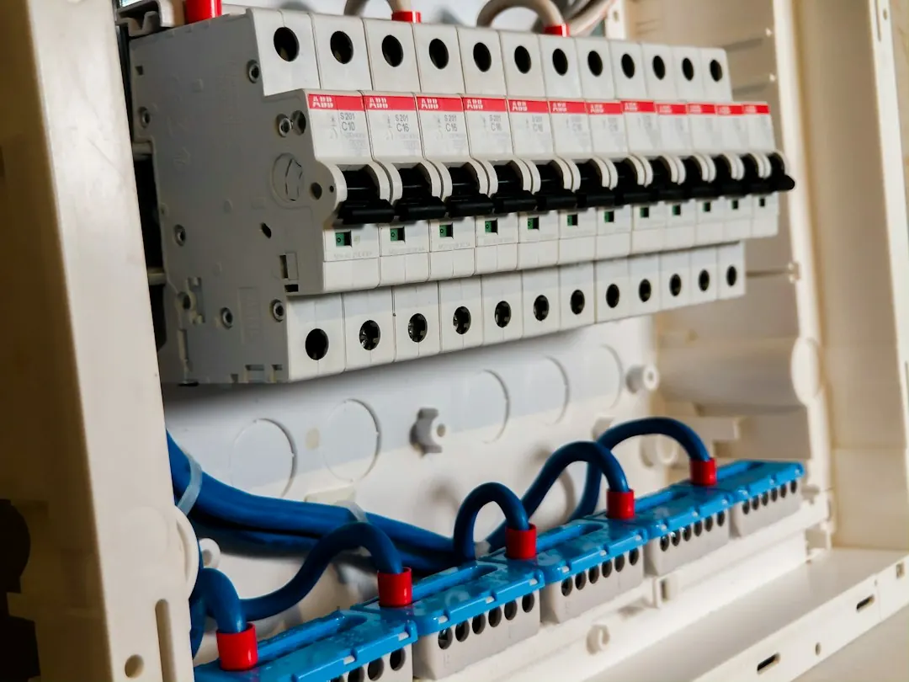

Repeated safety switch trips, dead circuits and dimming lights can indicate a wiring or appliance fault. Note when the problem occurs, which rooms are affected and whether appliances are connected. Homeowners should limit themselves to simple tasks such as changing a bulb or resetting a breaker. For smoke, a burning smell or injury, call 000 first. Ask a licensed electrician for a written scope and price, then keep the testing and compliance certificate after installation work.
For homeowners comparing electrical repairs paddington options, the useful questions are what the fault is doing, whether the property has older wiring, and what the written scope includes.
Electrical Repairs Paddington Explained
Electrician Paddington explains fault finding as tracing the affected circuit rather than repeatedly resetting a switch. That approach is relevant in older Queenslanders, workers' cottages and terraces, where wiring may have been added over decades.
Before requesting help, record what happens. Note whether the safety switch trips immediately, whether only part of the house loses power, and whether the fault appears when the oven, air conditioner or another appliance starts. If the switch still trips with everything unplugged, the wiring is the likelier line of investigation.
- List the rooms, lights or power points affected.
- Record the time and any appliance operating when the fault appears.
- Say whether the issue is intermittent or repeats every time.
Repeated resetting does not identify the cause. Queensland homeowners can perform simple tasks such as changing a light bulb, tube or fuse, and resetting a breaker or safety switch. Work beyond those tasks belongs with a licensed electrician.
Recognise when the switchboard changes the scope
A ceramic fuse board is an important detail when asking for an assessment. The published guidance says these older boards may have no safety switches, while a modern switchboard can provide that protection across the home's circuits. The job may therefore involve more than replacing a fuse.
Ask which circuits are included, whether safety switches are already present and what testing will be performed. If renovation work is planned, mention new kitchen or bathroom circuits, extra power points, lighting, fans or an electric vehicle charger. A charger may require switchboard capacity work first.
Price depends on the work involved. Fault tracing, a defined board upgrade and rewiring around a renovation require different access and labour. A written price should identify the proposed work and any conditions that could change the scope.
Plan around an older Paddington home
Building form affects how a repair or upgrade can be reached. In a lined timber Queenslander, new cable may run through the roof space or under the floor so walls do not need to be cut open. The suitable method depends on the property and the circuit.
Give the electrician useful access information before the visit. Mention whether the board is inside or outside, which rooms are affected, whether floors or ceilings have recently changed, and where new fittings are wanted. For a power point, outdoor outlet, sensor light or dimmer, specify the location and intended use.
For planned work, separate the essential repair from optional additions. A fault should be traced and explained first. New lights, smoke alarms, fans, power points or charger wiring can then be listed as separate items, making the quote easier to compare.
Nearby properties in Red Hill, Milton, Petrie Terrace, Bardon and Ashgrove may also involve older timber homes, but the building itself remains the relevant factor when estimating access.
Check licensing, scope and completion records
Work beyond the simple homeowner tasks described in the published guidance should be assigned to a licensed electrical contractor. Ask for the licence number shown on the quote and check it through the online Electrical licence holder search. This identifies the contractor responsible for the work.
The written scope should distinguish fault finding from repair and identify separate work such as a switchboard upgrade, rewiring, smoke alarm replacement or additional power points. It should also state what is excluded, particularly where a fault is hidden behind a wall or within a cable run.
After installation work is finished, keep the certificate of testing and compliance. Retain the quote as well, together with an explanation of changes made to circuits, alarms or the switchboard. These records make the completed work easier to understand later.
Who this guide applies to
This guide is for people dealing with power loss, tripping circuits, older switchboards or planned electrical changes in Paddington and nearby Brisbane suburbs. It is most useful when the symptom is intermittent, affects several points, or appears linked to an appliance or renovation.
A useful request includes the property type, affected rooms, timing of the fault, recent electrical work and access conditions. Ask for the licence number, written scope and price before work begins. You can also read the related guide to comparing Paddington electrical repair work for another practical checklist.
Smoke, a burning smell or an injury requires an urgent call to 000 first. For other problems, describe the pattern accurately and arrange professional fault finding rather than continuing to reset the switch.
- Describe the symptom. Record what trips, loses power or flickers, including when it happens and which appliances are running.
- Share the property context. Mention older wiring, a ceramic fuse board, renovation plans, difficult access or an EV charger location.
- Verify the contractor. Ask for the Queensland electrical contractor licence number and check it in the online licence holder search.
- Confirm the scope. Get the work, exclusions and price in writing before the job begins.
- Keep the record. Retain the certificate of testing and compliance after installation work is complete.
| What you notice | What to describe | What to ask |
|---|---|---|
| Safety switch trips again | Whether it trips with appliances unplugged | Can the affected circuit be isolated and tested? |
| Part of the home is dead | Which rooms or points have lost power | Is the cause a circuit fault or board issue? |
| Lights dim or flicker | When the change occurs | Could the wiring or an appliance be involved? |
| Renovation is planned | New rooms, points, lights or appliances | What circuits and access will the job require? |
Common questions
What should I do if the safety switch keeps tripping? Note when it trips and whether it still happens with everything unplugged. Repeated trips require fault finding rather than repeated resetting, and work beyond simple homeowner tasks should be handled by a licensed electrician.
Can a homeowner replace electrical fittings in Queensland? The published guidance says homeowners can change a light bulb, tube or fuse, and reset a breaker or safety switch. Work beyond those simple tasks is for a licensed electrician.
Why can a written quote help with hidden wiring faults? A fault behind a wall or in a cable run may require different access from a defined power point or switchboard job. The quote should state the intended work and price before work begins.
What paperwork should I keep after electrical work? Keep the certificate of testing and compliance after installation work. Retain the written scope and any explanation of changes to circuits, alarms or the switchboard.
This guide covers fault symptoms, switchboards, renovation planning, licensed electrical work, quotes and completion paperwork in Paddington and nearby Brisbane suburbs.